Task 5: Context Windows and Retrieval Augmented Generation (RAG)
-
The context window is the limit on how much text the model can keep in mind and process at once. It includes your messages, the model’s replies, and any other text in the conversation. If the conversation gets too long and goes beyond this limit, the model might start to forget what was said earlier.
-
Example
-
For GPT-3.5, the context window limit is approximately 8,000 tokens (one token typically represents about 4 characters on average.). If the input text along with previous interactions (if any) exceeds the limit of LLM, the model may not be able to see or remember parts of the text that fall outside this window. This can result in errors or the inability to refer back to earlier parts of the conversation or document.
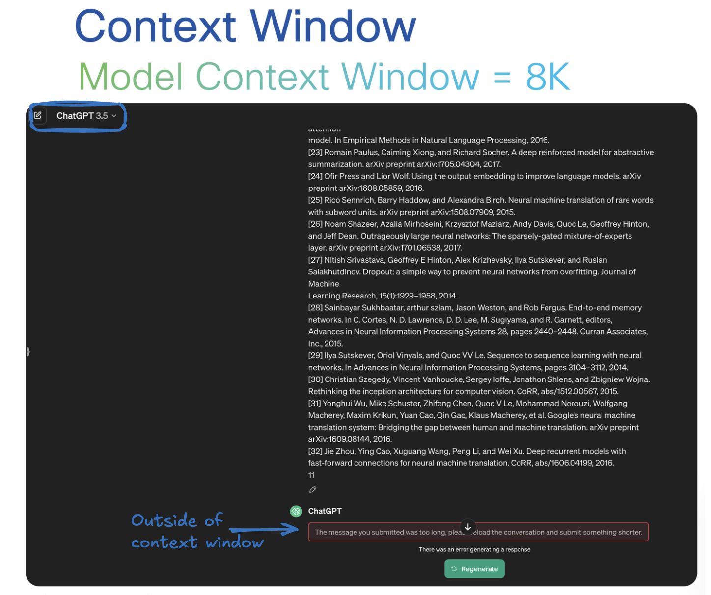
Note: A token can be as small as a piece of a word or as large as a word itself, depending on the language and complexity of the text
- Consider a model with a context window limit of 8,000 tokens. If we input 6,000 tokens and the model generates a response of 1,500 tokens, the total token count is 7,500. This is within the model's context window, so all information is processed correctly. Conversely, if the input increases to 10,000 tokens and the response remains at 1,500 tokens, the total becomes 11,500 tokens. This exceeds the model's 8,000-token limit. Consequently, the model might lose context or be unable to respond properly as the excess information falls outside its context window. This demonstrates the importance of managing input size to stay within the model's processing capabilities.
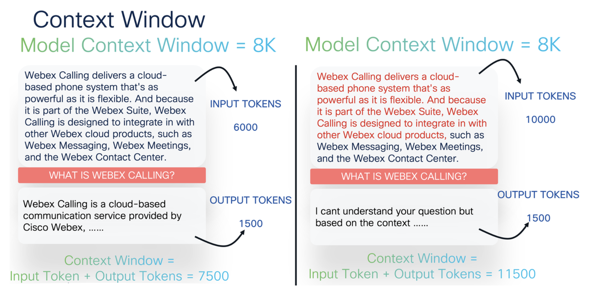
How Context window work
-
In the below example , multiple potential predicted words exist, but the model chooses the words based on the surrounding context and their probability. However, if the context window size increases and the word "Webex" moves out of the window, the model may lose critical context. As a result, the next predicted word might be incorrect, as the model can no longer reference "Webex" to inform its predictions accurately. This highlights the importance of keeping key information within the context window to maintain the accuracy of the model's predictions.
-
Additionally, the temperature setting in the model can influence the type of content it generates. Lower temperatures are useful for summarizing or generating more deterministic and concise outputs, while higher temperatures encourage creativity, making the model more suitable for writing stories or poems. Adjusting the temperature allows you to control the balance between predictability and creativity in the model's output.

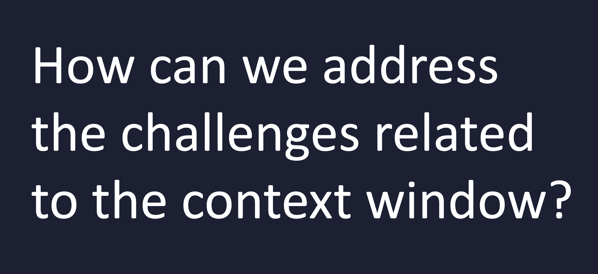
- Thats where RAG com einto play
Retrieval Augmented Generation (RAG)
Lets try to undertsand what RAGs are all about before we can look how they can solve context window issues
RAG = Retrieval Augmented Generation

Lets focus on the Generation part. Generation basically means responding to user query. For example, you might ask the model whether DX or Navigators are compatible with supporting ThousandEyes.
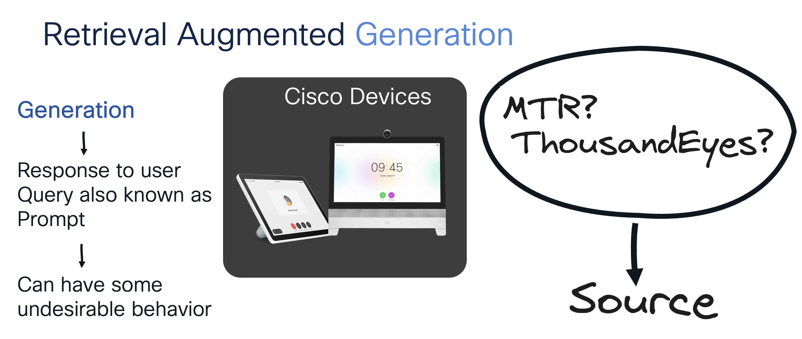
That's an excellent question. LLMs are trained on vast amounts of historical data, so they may recognize that DX and Navigators are well-regarded Cisco products. As a result, the LLM might confidently respond that you can install ThousandEyes on those devices. However, the issue is that the response may lack a verifiable source to back up that claim or the information can be out-of-date
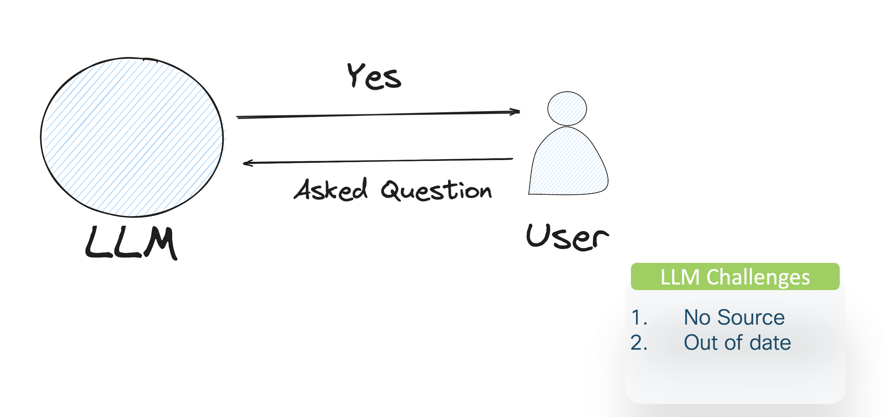
What if, instead of just asking the question, I had first consulted a reputable source and only then informed the user that ThousandEyes can't be installed on those devices? This is where Retrieval-Augmented Generation comes into play. By integrating a knowledge base—such as PDFs, CSVs, images, and other resources—into the model, we ensure that any time a question is asked, the response is based on the most current and accurate information available.
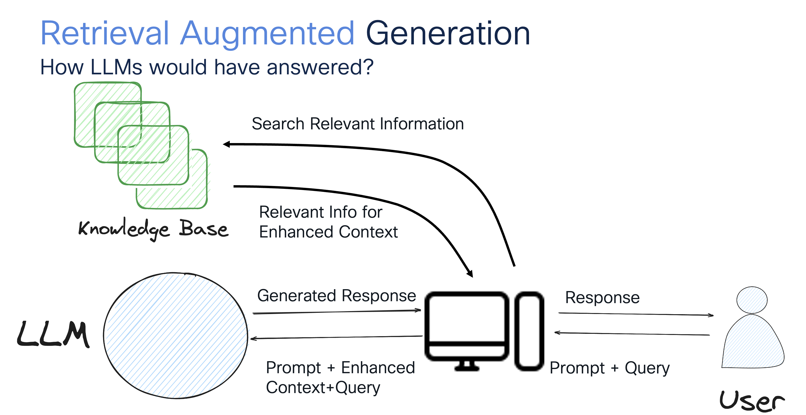
How can RAG address the limitations we've seen with the context window?
To address the context window limitation, we can use an embedding model to convert relevant text into embeddings and store them in a vector database. When a user submits a query, we transform it into an embedding and compare it to the stored embeddings to find the closest match. Once we identify the match, we retrieve that specific chunk of text to respond to the query. This approach effectively overcomes the context window limitation by ensuring that our responses are accurate and contextually relevant.
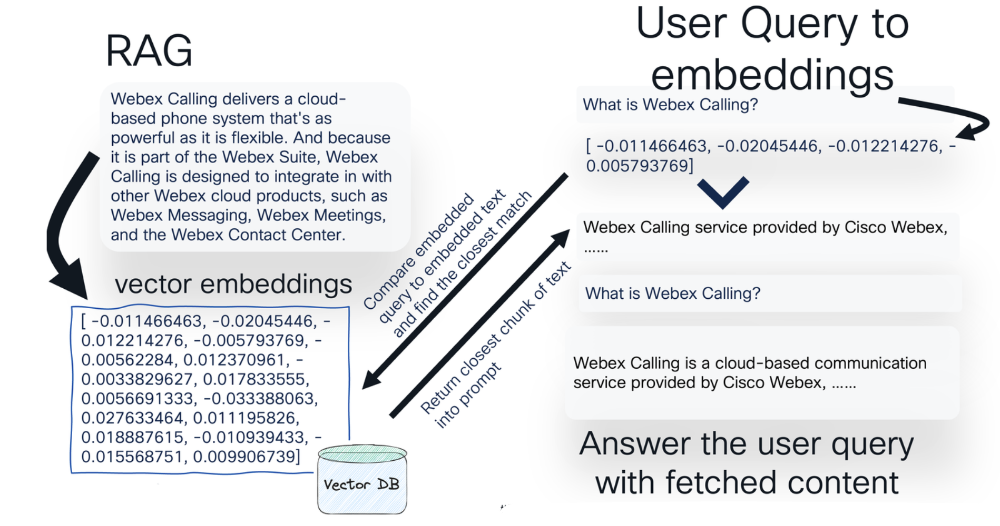
Now you can see how RAG can address some of the challenges with LLMs. Instead of re-training or fine-tuning the model with new information, we can augment our data sources to retrieve the most up-to-date information. Additionally, LLMs are now instructed to prioritize primary source data before generating responses, making them less likely to hallucinate and encouraging more accurate and reliable outputs.
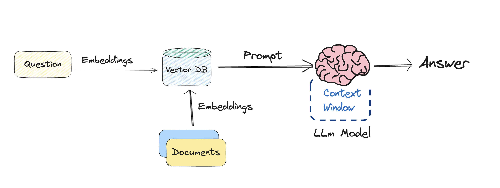
What's Happening Under the Hood
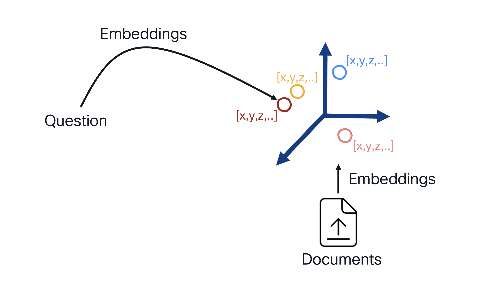
We normally start by taking multiple documents and converting them into embeddings. Imagine these embeddings as points in a 3D space, where each document is projected based on its semantic meaning or content. Documents located near each other in this space contain similar semantic information, which is crucial when we search for or retrieve information.
Now, when we receive a query, we also convert it into an embedding (numerical value). We then perform a similarity search in this 3D space, looking for the documents that are closest to our query's embedding. These nearby documents are likely to contain the most relevant information.
Once we've identified these matching documents, we retrieve the relevant sections (or "splits") and feed all this information into the LLM's context window, allowing it to generate a well-informed response.
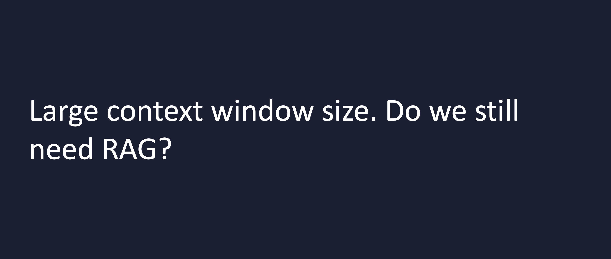
We've seen models like Gemini Pro with a context window size of millions, allowing them to retain more information. So, why use RAG? The answer is that RAG remains highly beneficial for sourcing real-time data,fact-checking, and accessing external knowledge that isn't contained within the context window.
Lets buils a quick RAG application
While LLMs (Large Language Models) like GPT-4 , Llama, Gemini possess impressive general knowledge, they don't inherently have access to your data. To connect LLMs with your own data sources, we can use frameworks like LangChain. These frameworks enable us to leverage our own data by breaking down documents into smaller chunks and storing them as embeddings in vector databases.
This approach allows us to build applications that can effectively use language models. Example: When a user asks a question, we convert it into embeddings, perform a semantic search to find the most relevant answers, and then send both the question and the retrieved information to the LLM to generate a response.
In this section, we'll briefly introduce LangChain, but in the upcoming chapters, we'll dive deeper to gain a more comprehensive understanding of how it works.
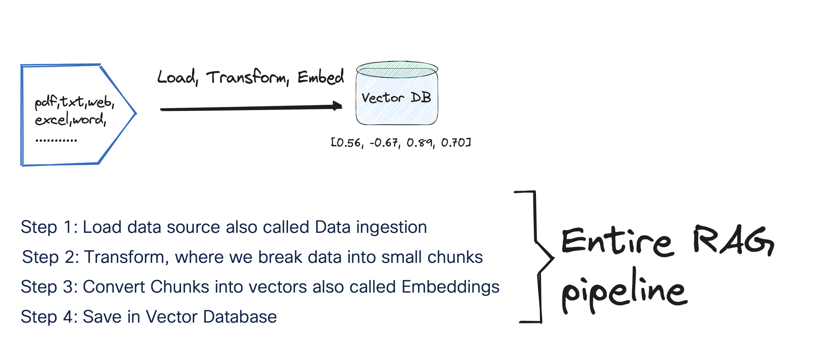
Note: In this section, we will be using the Cisco DECT 6800 Deployment Guide. For the purposes of this lab, I've modified the original PDF by removing a few pages and saving it as a new file. The PDF we are using in this lab can be downloaded from here
- Open Google Colab and create a new notebook. Click on "File" > "New notebook". Please refer to the following section to create Google Colab account.

- Make sure you are connected to a runtime. For this task, you can use the CPU as the runtime environment.

- Within your existing Google Colab notebook navigate to the new “Secrets” section in the sidebar.

* If not already done, Click on “Add a new secret.” Enter the name example: OPENAI_API_KEY and value of the secret(the API key created earlier). Note: The name is permanent once set.
* The list of secrets is global across all your notebooks.
* Use the “Notebook access” toggle to grant or revoke access to a secret for each notebook.
-
Let's load our PDF files into Google Colab. For this example, we can use the modified DECT guide
-
Within Google Colab, Click on Folder and create a new folder called "data"

- Click on [...], select Upload

- Choose your dect.pdf file and click Open
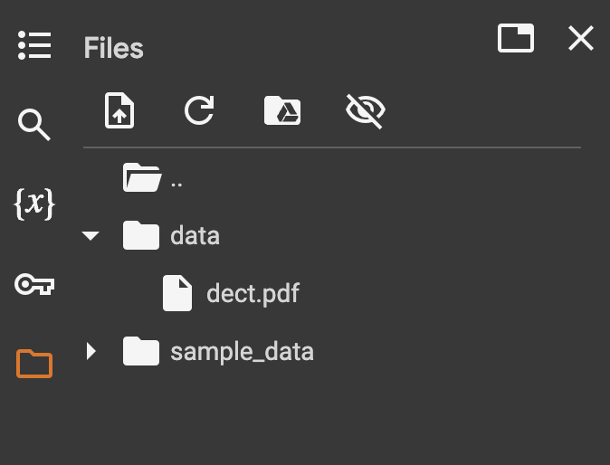
- Install relevant Python packages
1 | |
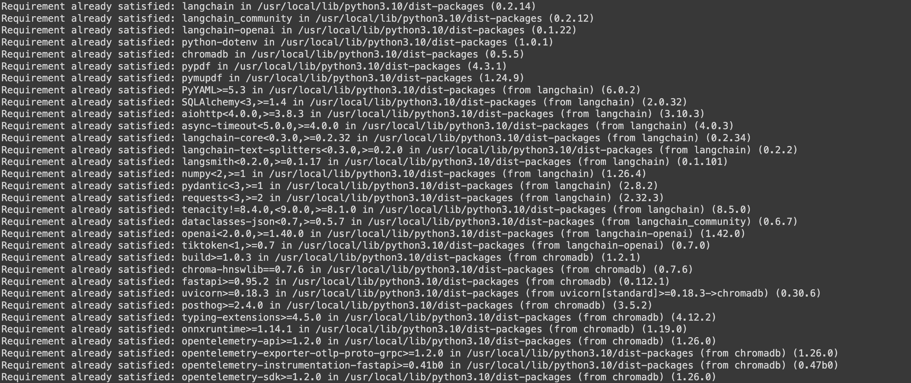
- Let's retrieve a OpenAI API key and set it as an environment variable within the Colab environment
1 2 3 | |
- Install relevant libraries for RAG
1 2 3 4 5 6 7 8 9 10 11 | |
- Load data source also called Data ingestion
1 2 | |
- Transform, where we break data into small chunks. We can use techniques like RecursiveCharacterTextSplitter or tiktoken for tokenizing text.
1 2 | |
- Let's create our embeddings. As discussed in the Embedding section, there are multiple techniques available. In this lab, we will use OpenAI embeddings. By default, the text-embedding-ada-002 model is used, but we can also opt for the text-embedding-3-large model if desired. Once the embeddings are created, they can be stored in a Vector Database. While there are various databases available, as covered in the Embeddings and Vector DB section, in our example, we will use the Chroma Vector DB, which can be easily deployed locally on your machine. We will also create a retriever by using retriever = vectorstore.as_retriever() which converts the vector store into a retriever object. This retriever can then be used to find and retrieve documents or data from the vector store that are most relevant to a given query, based on the similarity of their embeddings.
1 2 3 4 | |
Note: We are using Chroma dB but you have options to use other databases as well such as Faiss.
Also we can use embeddings from Ollama, an open-source and cost-free embedding solution. Below is a code snippet for your reference only:
# from langchain_community.embeddings import OllamaEmbeddings
# embeddings = OllamaEmbeddings()
Note: More info on Vector Databases can be found here
- At this stage, we've loaded the document, created splits, converted them into embeddings, and stored them in the Vector DB. Now, let's query the database to ensure we can retrieve the information.
1 2 3 | |
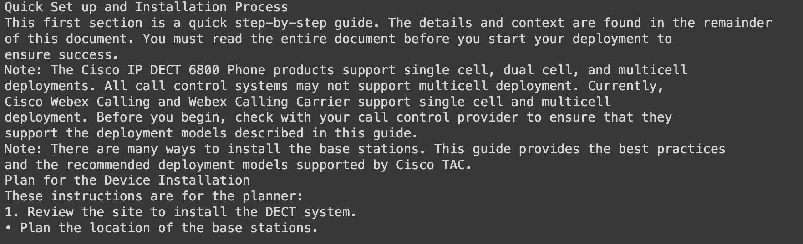
- Let's create our prompt. There are several ways to do this, you can either craft it manually or use prompts that have already been made available on the LangChain Hub. In this section, I'll demonstrate how to pull a prompt from the LangChain Hub and use it. Browse to Langmith and create an account. In this example, I'll use Google to sign up for a Langsmith account, but feel free to choose the option that works best for you.
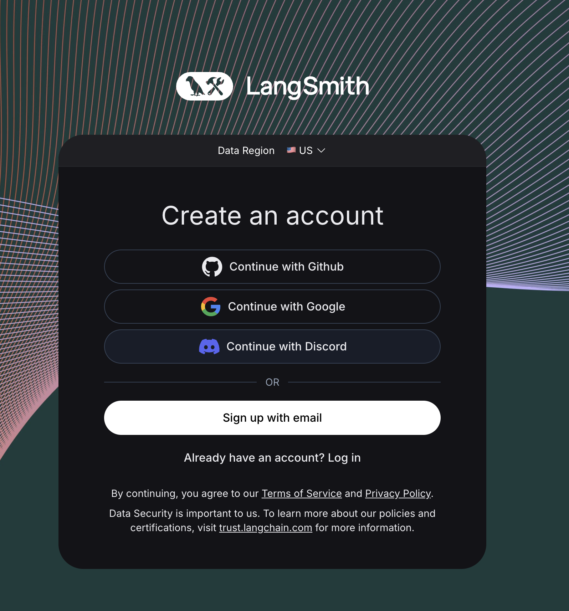
- Create your API Key
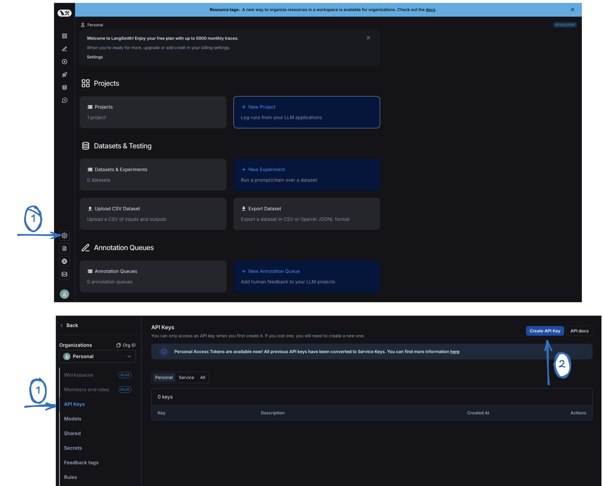
- You can either enter your key in the secret folder or paste it manually here.
1 | |
- Lets pull our prompt
1 2 | |
Here's an example of a manual prompt for your reference only—if you prefer not to use the downloaded prompt.
template = """Answer the question based only on the following context:
{context}
Question: {question}
"""
- We can now connect LLMs to our data sources. In this lab, we are using OpenAI models, but feel free to use open-source models if you prefer.
1 2 3 | |
- Lets use the Retrieval-Augmented Generation (RAG) pipeline to put all together. We will use retriever | format_docs to retrieve relevant documents (or context) related to the input question and formats them. The RunnablePassthrough method will be used to simply pass the question without modifying it.
1 2 3 4 5 6 7 8 9 10 | |
Note: When we pass our question into the rag_chain.invoke() method, it first goes through the retriever component that we set up earlier. The retriever uses the same embedding model, text-embedding-3-large, to transform the question into an embedding vector. This vector is then compared with the embeddings of documents stored in the Chroma vector store to identify the most relevant ones. Once these relevant documents are retrieved based on the similarity of their embeddings, they are sent along with the original question to the language model (LLM), which then generates a response.
OUTPUT To set up and install a DECT phone system, first review the site and plan the location of the base stations, ensuring they are within 50 meters of each other for good coverage. Upgrade the base stations to the latest firmware, configure them according to the Cisco IP DECT 6800 Series Administration Guide, and unpack and prepare the handsets. Finally, mount the base stations, place the handsets in their cradles, and make a few test calls to ensure everything is working correctly.
Measuring Vector Similarity Using Cosine Similarity
Cosine similarity is a metric used to measure how similar two vectors are, regardless of their magnitude. It is particularly useful in the context of text analysis, information retrieval, and machine learning, where it is often used to compare the similarity of two text documents, sentences, or any other data that can be represented as vectors. In our code, we will use it to match the similarity between the question we asked and the answer we receive.
- Lets create a function that calculates the cosine similarity between two vectors by using dot product a scalar value.
1 2 3 4 5 6 7 8 | |
- We will now convert the question into an embedding, retrieve the embedding of our question, and the embeddings of the documents retrieved by the retriever.
1 2 3 4 | |
- Lets calculate and print similarity between the question and each retrieved document
1 2 3 4 5 6 | |
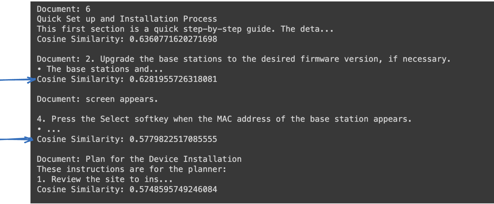